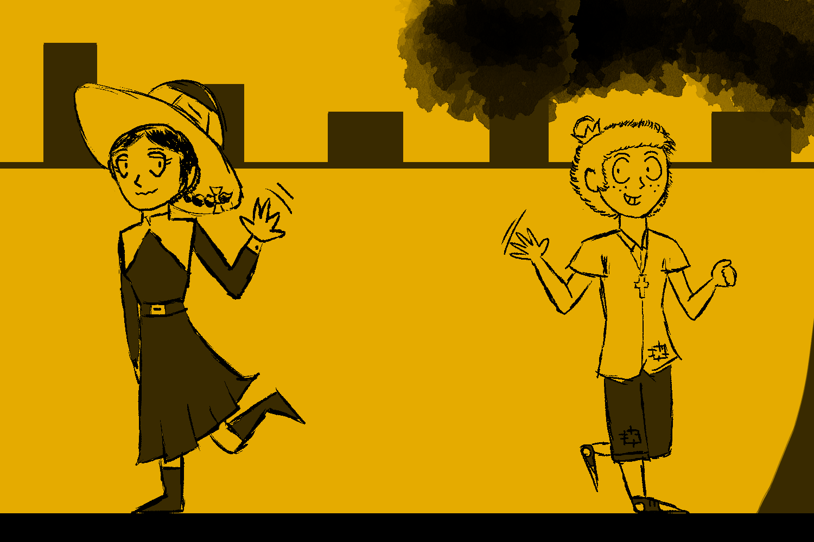
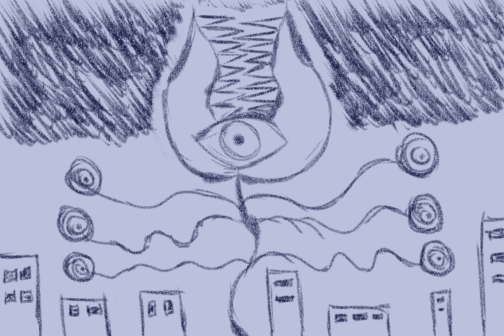

Welcome to the “Letters” website! Unfortunately, the site can only be accessed via desktop. Nevertheless, click here to find links for depression and COVID-19 helplines.
Life can really hit you in unexpected ways. We can plan things out as much as we want, but it’s unlikely that they’ll play out perfectly.
Doesn’t exchanging gifts like this make us seem like a couple?
It’s fine, they’re just birthday presents after all.
Kinda funny that ours fell on the same day.
I think coincidences like that are pretty neat!
Well, today was fun, I’ll see you next week, Eric.
See you then, Ellen, don’t lose my favorite bowtie!
Unfortunately, that meeting didn’t happen.
A grotesque creature appeared the next day at the center of the city. No one knows where it came from or why it’s here, but the general population was forced to stay in their homes, unsure of what the monster might do.
Thus, our days in self-isolation began.